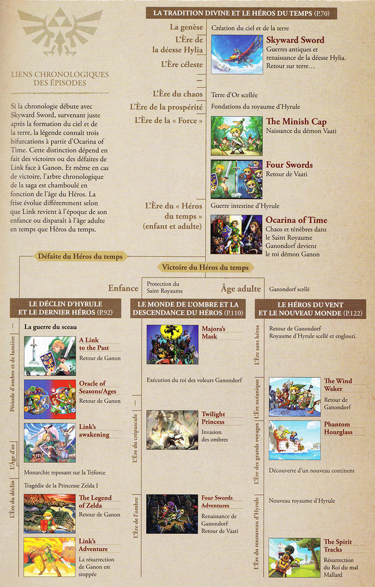

The Legend of Zelda (qui ne doit sous aucun cas être traduit en français sous peine de punition
divine et instantanée), créé par Takashi Tezuka et Shigeru Miyamoto, est une série de jeux
vidéos
qui a vu le jour en 1986 avec un épisode intitulé "The Legend of Zelda" sur NES.
Ce dernier était une petite révolution pour l'époque avec son système de sauvegarde sur batterie
que
nous, les vieux aigris, avons connu ou même son gameplay, bien connu aujourd'hui, qui a
révolutionné
le genre.
Fort de son succès, Nintendo sort en 1987 un épisode 2 "Zelda II : The Adventure of Link", qui
ajoute certaines choses qui manquaient au 1er, comme par exemple la possibilité de parler avec
des
PNJ qui prends plus d'importance (le premier était très vide, ne nous mentons pas.), mais qui
fonctionnera un peu moins.
Mais, cela n'était que le début. En effet, c'est en 1991, 4 ans plus tard, que sort un épisode
aujourd'hui très connu (notament grâce à sa réédition sur GBA), The Legend of Zelda : A Link to
the
Past.
L'épisode revient à une vue de dessus délaissé par le deuxième. Il est le premier Zelda tel
qu'on le
connait aujourd'hui, du moins, en 2D.
Viens ensuite, 2 ans plus tard TLoZ : Link's Awakening, le premier de la série sur Game Boy,
hors
d'Hyrule, et surtout sans Zelda.
Pourquoi je dis de moins en moins de choses ? C'est simple, on arrive à la révolution de Zelda,
ça
mérite presque un article suplémentaire ahah...
La Ballade du Succès
Le messi est arrivé, The Legend of Zelda : Ocarina of Time sort en 1998.
La série prends alors un sacré tournant, puisqu'on passe à la 3D. Il est victime d'un succès
immense
et est même considéré comme le meilleur jeu de tout les temps par certains.
OoT, comme on l'appelle, reprends l'essentiel des précédents jeu et réussi avec brio à le
transposer
en 3D en incluant de nouvelle possibilité grâce à cette dernière. L'Histoire du jeu vidéo est
marqué
de manière indélébile.
C'est donc grâce à ce succès que sa suite direct vois le jour, TLoZ : Majora's Mask, toujours en
3D,
il reprends les codes de son prédécesseur tout en le changeant considérablement.
La série retourne ensuite à la 2D avec les excellents Oracle of Season et Oracle of Age sur Game
Boy
Color, dont l'un est la suite de l'autre grâce à un mot de passe donné une fois un des deux fini
pour continuer avec l'autre, chacun a son orientation niveau gameplay, l'un sur les enigmes,
l'autre
sur l'action.
Les années 2000 arrivent, et avec elles, la très aprécié Nintendo GameCube et avec elle, en
2002,
son épisode de Zelda, le premier en Cel-Shading (un aspect 3D cartoon), TLoZ : The Wind Waker
qui nous
permet de voguer à travers des océans à l'aide d'un bateau.
La même année sort une réédition de A Link to the Past sur Game Boy Advance accompagné d'un
petit plus : le premier Zelda multijoueur,
Four Sword, et 1 an plus tard sa suite Four Sword Adventure sur GameCube, avec un systeme un peu
spécial en multi, il faut une Gameboy Advance
pour y jouer, mais pas en solo.
Un épisode inédit sort aussi aussi sur GBA, Minish Cap, avec un système de changement de taille.
C'est en 2006 que sort le 4ème Zelda 3D, le très sombre Twillight Princess (Mon préféré, je dois
l'avouer), sur GameCube et sur la toute
nouvelle console de Nintendo, la Wii. Le gameplay est très différent même si c'est exactement le
même jeu. En effet,
sur Wii, le jeu passe en mode miroir et cette version s'enrichie de la capacité de la Wiimote à
reconnaitre les mouvements
Viens ensuite 2 épisodes en 3D mais avec la vue de dessus iconique sur Nintendo DS, Phantom
Hourglass en 2007 et Spirit Tracks en 2009 qui sont des suites de Wind Waker.
Annoncé lors de l'E3 2010, Skyward Sword, qui sortira 1 an plus tard et qui aura un remaster sur
Nintendo Switch en 2021, il s'agit d'un Zelda 3D avec des graphismes à mi-chemin
entre Twillight Princess et Wind Waker. SS utilise la nouvelle technologie de la Wii, le Motion
Plus qui permet des mouvements plus réaliste, il est
le premier Zelda, et le seul ou il ne suffit pas d'appuyer sur un bouton pour, par exemple,
donner des coups des épées, mais de les réaliser soit même.
La Nintendo 3DS quand à elle aura droit à son épisode 2D/3D en 2013 avec A Link Between Worlds,
une suite à A Link to the Past.
Un nouveau souffle sur la licence
2011, Shigeru Miyamoto annonce qu'un nouveau Zelda 3D est actuellement en cours de développement
depuis 2010
sur Wii U, il faudra attendre 2014 pour avoir les premières images et 2017 pour que The Legend
of Zelda : Breath of the Wild sorte sur Wii U et
sur la nouvelle console, la Nintendo Switch. Le succès est fulgurant, malgré que les
performances ne soit pas au rendez-vous par rapport aux consoles
concurentes, la PS4 et la Xbox One. Le jeu est encensé par la critique et redéfini la licence,
malgré de (très) gros points négatifs du jeu : certain éléments inérant aux Zelda, comme les
donjons,
ont plus ou moins disparu. La liberté dont on bénificie dans le jeu, par exemple pouvoir aller
affronter le boss final dès la sortie de la zone du tuto, et avoir accès à l'intégralité de la
map
a aidé au succès de celui çi, rappellant un peu la liberté du tout premier jeu.
Lors de l'E3 2019, Nintendo nous réserve un "One More Thing" qui a surpris tout le monde :
l'annonce de la suite de BotW et du commencement de son développement.
Il fallu attendre 2022 pour que le nom de ce dernier soit révélé : The Legend of Zelda : Tears
of The Kingdom avec une date de sortie pour le 12 mai 2023.
L'histoire de la légende
Mais a présent, tu dois savoir. Je vais te raconter ce qu'il s'est produit il y a un siècle.
-Rhoam Bosphoramus Hyrule The Legend of Zelda : Breath of The Wild
L'histoire général d'un Zelda est plutôt simple, un méchant apparait, Zelda (la plus part du temps)
se fait kidnapper, Link pars la sauver, affronte des donjons, rammasse des objets,
et renvoie le grand méchant chez mémé. Mais évidement, chaque jeu à sa propre histoire, son propre
gameplay. On va ici parler plus en détail des jeux Zelda les plus notable.
Du moins, pour le moment.
Les Zelda en 2D
A Link to the Past a une histoire plutôt simple : Après une courte intro, ou on nous informe
qu'un sorcier maléfique du nom de Agahnim a débarqué en Hyrule afin de brisé un sceau, tué le
roi et kidnappé la princesse,
nous retrouvons notre héro, Link, la ou on aimerait être actuellement : dans son lit. Monsieur
se paie en plus le luxe de
rêver, mais pas le meilleur rêve. Alors que la tempête fait rage sur Hyrule, une voix l'appelle
: "A l'aide ! A l'aide ! Je suis prisonière dans le donjon
du château. Je m'appelle Zelda.", on apprends aussi que Agahnim a ensorcelé d'autres jeunes
filles, pris le controle du château et qu'il essaie de brisé le sceau.
Notre vaillant Link, n'écoutant que son courage (ou sa stupidité ? Non, c'est vrai, tu ferais la
même chose toi ?), décide de braver la tempête,
armé seulement d'une lanterne, pour aller sauver la princess, en esquivant habillement les
gardes sous le controle du sorcier.
Il parvient à trouver un passage dérobé qui mène dans le sous-sols du château ou il retrouve son
oncle, parti plus tôt faire un petit tour avec son
épée et son bouclier, gravement blessé. Celui çi lui confis alors son épée et Link s'en va, le
laissant seul avec les rats, pour libérer Zelda,
non sans assassiner tout les pauvres soldats contrôlé au passage. Cette dernière libre, elle lui
révéle que le château a un passage secret qui mène à dans la chapelle d'un village voisin.
Une fois arrivé, nous sommes accueilli par le curé du coin rassuré de voir la princesse en vie.
On apprends alors que la princesse est la dernière clef qui
permettrai à Agahnim d'ouvrir de le sceau et que Link doit tuer le sorcier pour sauver le
royaume, qu'une force maléfique augmente surement ses pouvoirs et
que pour le vaincre, je devrais parcourir les 4 coins du royaume afin de trouver l'Epée de
Légende, appellé ici "Excalibur".
Et une fois cela accomplis, ce n'est pas fini ! On se retrouve dans le "Dark World" pour une
partie 2.
Si ce jeu se retrouve là, c'est uniquement parce que je l'ai fini beaucoup trop de fois. Encore
une fois, l'histoire est simple, Zelda vient chercher Link
chez le maître forgeron en personne (rien que ça) pour aller à un fameux festival se déroulant
dans la ville d'Hyrule et pour livrer une épée commander par le roi.
On apprends alors que le vainqueur d'une certaine compétition ayant eu déjà lieu sans nous est
le seul a pouvoir toucher l'épée Minish sacrée qui scelle un coffre remplis de monstre...
Qu'est-ce qui pourrait mal se passer ?
Le vainqueur du tournois est un certain Vaati, qui n'as pas du tout, mais alors pas du tout
l'air d'être le méchant... ah bah si. Après avoir
envoyer paître l'élite des soldats du royaume, ce dernier détruit l'épée superpuissant et
sacrée, ouvrant le coffre et libérant les monstres, qui
au passage font faire au roi un vol plané pendant que Zelda ne protège qu'elle. Vaati décide
alors de s'en débarraser, mais c'était sans compter Link
et son fidèle bouclier qui se met devant sa princesse pour la sauv... ah bah non, il se fait
dégager et la princesse se retrouve transformé en pierre.
A son réveil, le jeune Link est chargé de restaurer l'épée Minish et de sauver la princess parce
que les soldats sont des incapables et que personne
ne peut mieux faire qu'un gamin de probablement 14 ans.
Direction donc l'endroit le plus évident pour commencer : La forêt de Tyloria ou les Minish
vivent. Dans cette forêt, Link fait une bien étrange rencontre :
Un chapeau qui parle et qui cherche lui aussi à brisé une malédition : Exelo. Ce dernier
occroira à Link la capacité de rétrécir, plus précisément, à
atteindre la taille d'un minish...
Nous sommes ici sur la suite direct de Wind Walker, d'ailleurs l'intro du jeu le résume.
Pour faire simple, on retrouve Link sur le bateau pirate de Tetra, cette dernière est à la
poursuite d'un bateau fantôme. Evidemment, quand on cherches les problèmes, on les trouves
Le bateau apparait, Tetra saute dedans et se fait attaquer... Comme d'habitude, Link réagit au
quard de tour, et essaye de sauter sur le bateau... se rate et tombe dans la mer.
On est alors réveillé par Navi... euh Ciela, une fée, sur une île qui nous est inconnu, après
lui avoir expliqué ce qui s'est passé, cette dernière nous mène au prêt de
Siwan qui nous demande d'abandonné notre quête. Bien évidement, Link refuse, il accepte alors de
nous entrainer un minimum à l'épée, parce qu'on a encore
jamais jouer à un Zelda jouable depuis un écran tactile, et nous partons à la recherche d'un
moyen de locomotion... Il part donc à la recherche du (pseudo)
capitain Linebeck qui le mènera dans un temple qui tombe en ruine... Ainsi commence la nouvelle
aventure de Link sur les flots...
Les Zelda en 3D
Nous retrouvons encore et toujours notre cher Link, un jeune koriki sans fée qui... dort, pour
pas changer. L'arbre Mojo, le protecteur des kokiri missionne alors une fée du nom de
Navi d'aller chercher le garçon sans fée afin de sauver le monde des forces maléfiques qui
arrivent... Cette fée beaucoup trop bruyante va donc réveiller notre héro pour qu'il rencontre
le vénérable arbre Mojo.
Après avoir sauver l'arbre Mojo d'un monstre en son sein, ce dernier, mourrant réveille à Link
qu'il n'est qu'un jeune garçon hylien orphelin dont l'arbre s'est occupé et qu'un vil cavalier
du désert menace l'équilibre
du royaume et lui conte l'histoire des 3 déesses et de la Triforce. Afin de l'aider à dans sa
quête le donjon... je veux dire l'arbre Mojo lui confie une pierre très spéciale,
l'Emeuraude Kokiri et rends l'âme...
Sur la route de la cité d'Hyrule, Link croise son amie Saria qui lui confie un ocarina, qui sera
important pour la suite, vous l'aurez
compris, vu le titre du jeu. Et pour le temps, et bien, une fois les 3 pierres réunis, on peut
se rendre dans le futur et mettre fin à la tyrranie
du fameux guerrier du désert : Ganondorf.
Surement l'épisode le plus sombre avec Majora's Mask, et mon préféré.
Cette fois, Link est un jeune homme qui vit dans le village de Toad, alors que tout semblait
bien se passer, le village se fait
attaquer par des monstres, la copine de Link se fait enlever et ce dernier est mis KO.
A son réveil, Link tente de partir à la poursuite des ravisseurs, mais se retrouve face à un
mur, litéralement, enfin plus ou moins... Puisqu'un bras
étrange chope Link et le fait passer de l'autre côté du mur, dans un Hyrule à l'ambiance bien
étrange. Alors que l'étrange créature observe notre héro de près, la Triforce du courage
apparait sur son
poignet et réagit, cette dernière le transforme en loup, il est alors capturé, sous le regards
d'un autre étrange créature aux cheveux oranges, et fini dans une géôle du chateau d'Hyrule.
Lors qu'il se réveille, il est toujours sous sa forme de loup et a la patte enchainé. Apparait
alors devant lui, la créature qui l'observait de loin plus tôt.
Cette dernière lui propose un deal : Elle l'aide si il l'aide. Classique. Ces derniers tentent
de s'échappé du chateau mais se retrouve par aller dans une des plus haute salle du chateau, ou
ils rencontrent une étrange femme caché sous une cape, qui connait visiblement notre étrange
aliée. On apprends que la créature s'appelle Midona, que le roi du monde du Crépuscule à attaqué
le Royaume et
que suite à cette défaite, Hyrule a été recouvert par le Crépuscule. La femme nous révèle alors
qu'elle est la princesse d'Hyrule, la Princesse Zelda (quelle surprise !).
Après cela, il faut s'échappé réellement du chateau, retrouver sa forme humaine et s'équiper.
Pour cela, passage au village en restant discret pour récupérer un bouclier et une épée,
jusqu'a ce que nous soyons appelé par l'esprit du lac non loin : Latouane. L'esprit l'informe
qu'il faut libérer les 4 autres esprit de la lumière et repousser le crépuscule d'Hyrule, pour
cela, il faudra, dans
chaque région, réunir un certain nombre de perle de lumière afin de rentre sa puissance à
l'esprit régionnal. Une fois le crépuscule chassé, Link retrouve sa forme humaine, accompagné de
sa fameuse
tunique verte. Il doit alors se débarrasser aussi des pouvoirs sombres qui attendent dans les
donjons qui se révèlent être des arctéfacts du Crépuscule que
recherche notre cherche waifu... euh, Midona. Une fois ces artéfacts réunis, nous faisons apprenons qui est le véritable méchant :
Ganondorf.
Et c'est repartie pour une seconde aventure afin de le vaincre, une bonne fois pour toute... ?
"Ouvre les yeux... Réveille-toi... Réveille-toi... Ouvre les yeux, Link."
Tel sont les premiers mots que nous entendont lors qu'on lance le jeu, le premier Zelda doublé. Link s'éveille, s'avance vers un machin qui fait de la lumière,
et la voix nous dit "prends cette tablette sheikah, elle t'aidera après ce long sommeil", on chope donc son iPad, s'habille parce qu'il caille sévère, et sort de la grotte.
Un paysage et musique magnifique nous accueil alors. Bienvenue sur le Plateau du Prélude, la zone tutorial du jeu. On dirige alors vers une petite tour qui, une fois l'iPad installer, va sortir de terre, comme toutes celles du pays.
La voix s'élève à nouveau, semblant provenir du chateau ou une lueur apparait qui nous dit de nous souvenir qu'on a fait une gros dodo de 100 ans et que quand le démon aura retrouver toute sa puissance, il en sera fini de ce monde, tout en pouvant observer
une aura maléfique avec un tête de sanglier semble s'emparer du chateau. A peine descendu, un viel homme débarque avec son paravoile (un planeur de Fortnite exclusif surement) pour nous informer
que si on veut se casser du plateau, et bien, il en faudra un pour nous aussi. Il nous propose donc de nous le donner si on vient à bout des différents sanctuaires aux quatres coins du plateau.
Une fois cela accomplis, le viel homme nous dit de le rejoindre la jonction des 4 lignes que font les sanctuaires, avant de disparaitre mustérieusement...
Arrivé au sommet des ruines du temple du temps, le viel homme nous attends. Il nous révèle alors être l'âme de Rhoam Bosphoramus Hyrule, ancien et dernier roi d'Hyrule, décédé il y a 100 ans, qui
décide de nous raconter ce qu'il s'est passé... On apprends que le grand méchant est l'incarnation du mal absolue : Ganon, Le Fléau.
Voyant les prémisces de sa réssurection arriver, ces derniers ont alors chercher quelque chose pour se battre et trouver un grand nombre de rélique ancestrales, 4 créatures divine ainsi qu'une armée de créature automatique : les Gardiens, et enfin, la princesse et son pouvoir, ainsi que qu'un preux chevalier armé de l'épée sacrée.
4 jeunes gens fuent alors nommé pour manoeuvrer les créatures divine, et sous le commendement de la princesse, le chevalier et ces derniers furent nommés les 5 Prodiges du royaumes. Malgré que toute les chances soit de leur côté,
l'arrivé de Ganon pris tout le monde de surprise, sortant des entrailles du chateau et prenant le controle des créatures et des gardiens. Le chevalier quand à lui défenda la princesse, mais mourru pendant la bataille.
Seule la princesse, Zelda, surviva et fit face à Ganon. Et le chevalier qui mourru en la protégeant, ce fut Link. Il pu être sauver grace au sanctuaire dans lequel il s'est réveillé, un siècle plus tard.
Zelda est maintenant trop faible pour contenir le Fléau, et le roi demande l'aide de Link. Il doit reprendre le controle des créatures et doit affronter Ganon.
Ou alors, se jetter directement hors du plateau, foncé dans le chateau, esquiver les ennemis et tabaser Ganon avec une épée rouillée et un vieux bouclier moisi et finir le jeu. Oui, c'est totalement possible.
La timeline officielle

Pour le cas Breath of the Wild, il n'est pas vraiment placé dans la timeline et aucune information officielle n'a été donnée. Sur le site japonais de Nintendo, il apparait à la fin, mais séparé du reste et ce malgré que celle çi se sépare en 3.